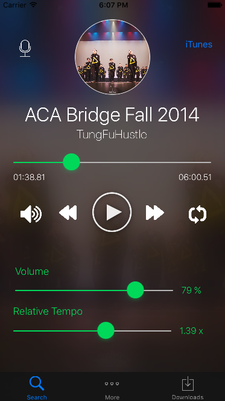

Projects
App Track (Repo)
App Track is a web application that allows users to effectively track and organize all of their applications, created during the CSUA Hackathon 2016 at UC Berkeley. Whether it be college or job applications, App Trak provides a user database where each individual can sort their applications by date and status, and allows the user to search for particular names in case the list grows very long.
Distance-Vector Routing (Repo)
Utilizes learning switches and distance-vector routers to transport packets to destinations efficiently while accounting for dynamic network topology updates. Implements features similar to Routing Information Protocol. Coded in Python.
Chat (Repo)
Created a chat server via the Python socket library that allows users to converse in different channels. Clients can create/join different channels, and messages are relayed to all other members of a particular channel.
kevintaehyungkim.github.io (Repo)
My personal "about me" website that I have developed from scratch using HTML and CSS. Built using Jekyll and hosted on Github Pages.
AudioPractice (September 2016 - Present)
Developing an iOS application designed to help dancers practice more efficiently through tempo and pitch control, markers to loop particular sections of music, and basic mixing of soundtracks.
HARBOR on Apache Hadoop (April 2016)
Given an abundance of page requests, matched request/reply pairs to construct Query Focused Dataset objects that were ultimately serialized into Hadoop File System. Coded in Java.
Depth Map Performance Optimization (Repo)
Developed a depth map using C that works with 8-bit grayscale bitmap images, and used techniques such as SIMD, OpenMP, and loop unrolling to optimize performance.
32-bit Two Cycle Processor (Repo)
Created a 32-bit two-cycle pipelined processor implemented via Logisim.
MIPS Assembler and Linker (Repo)
Created a two-pass assembler that translates MIPS instruction sets to machine code using C, and a linker that processes object files passed from the assembler to generate an executable file via MIPS.
Gitlet (Repo)
Created a smaller version of the Git control system that mimics certain features such as: add, commit, branch, checkout, merge, rebase, log. Coded in Java.
Modern Checkers (Repo)
Created a two-player game of Checkers with a slight twist by introducing two new pieces: Bomb and Shield. Coded in Java, with implementations of the StdDraw library from Princeton University.
Scheme Interpreter (November 2014)
Created a program that parses/reads code written in Scheme and evaluates the code recursively using Python.
Ants v Bees (Repo)
A game inspired by the popular Plants vs Zombies, where the user populates the ant colony with a variety of different ants to defend the queen against the bees. Coded in Python.